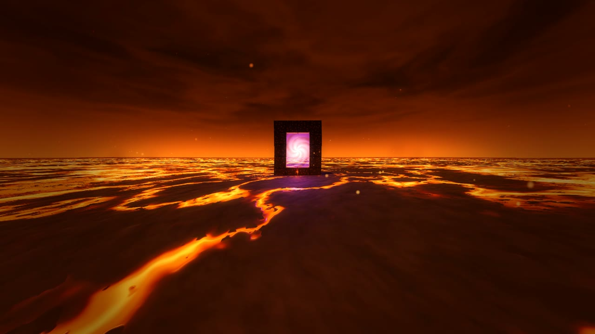
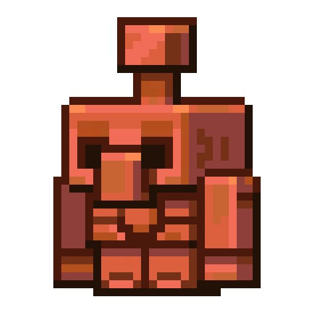

COPPER CLIENTYour game.
Your own character.
Flagship projectAvailable now
Copper Client
A customizable Minecraft Java client with a native ImGui interface, its own scripting API and a 3D visuals engine. Complete with a Windows launcher and a community marketplace.
- Native HUD & themes
- CopperScript API
- CopperVisual engine
- Desktop launcher
Desktop music controls, synced lyrics, animated pets, and Discord-reviewed scripts and themes.